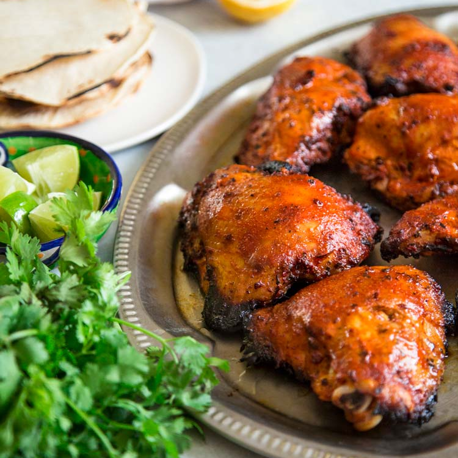

Pollo Asado

Description
This dish is juicy grilled chicken marinated in lime juice, Mexican spices, and achiote. The spices and achiote create a beautiful red color on the chicken. This flavorful dish has roots tied to Mexico and Cuba, and is the pefect pair for a tortilla!
Ingredients
- 5 pound whole chicken, cut into 8 pieces
- 1/2 cup olive oil
- 6 cloves of garlic, minced
- 2 tsps ground cumin
- 2 tsps salt
- 2 tsps ground black pepper
- 2 tsps Mexican oregano
- 2 ounces achiote paste
- 1/2 cup fresh orange juice
- 1/2 cup fresh lime juice
Achiote Paste Alternative
- 3 tbsps paprika
- 2 tbsps white vinegar
- 2 tsps dried Mexican oregano
- 4 cloves of garlic, minced
- 1/2 tsps ground cumin
Steps
- Heat oil in a skillet over medium-low heat. Add garlic, cumin, salt, pepper, oregano, and achiote paste and cook for several minutes, stirring. Remove from heat and allow to cool. Set aside.
- Add cooled achiote garlic mixture, orange juice and lime juice to a bowl and whisk to combine. Reserve 1/4 cup of marinade in the bowl to use for basting the chicken as it grills. Add remaining marinade to a 1 or 2 gallon freezer bag. Add chicken pieces, seal bag, and massage the bag, then transfer to a refrigerator to allow the chicken to marinate for one hour, or at most 4 hours to avoid chicken from getting mushy.
- Preheat grill to 350°F to 400°F. Remove chicken from marinade, then discard the bag of marinade. Grill with indirect heat.
- For indirect cooking on a charcoal grill, place your lit charcoal across half of the grill and leave the other half empty. To indirect cook on a gas grill, only turn half of the burners on (for example, top Medium, middle Low and the bottom Medium).
- Grill chicken, covered, until an instant-read thermometer registers 165°F when inserted into thickest portion of each piece, about 20 to 30 minutes. As chicken is cooking, use reserved marinade to baste the pieces every few minutes. Do not turn the chicken pieces over during cooking, as there is no need for grill marks.
- When chicken is cooked, discard any leftover marinade.
Return to home